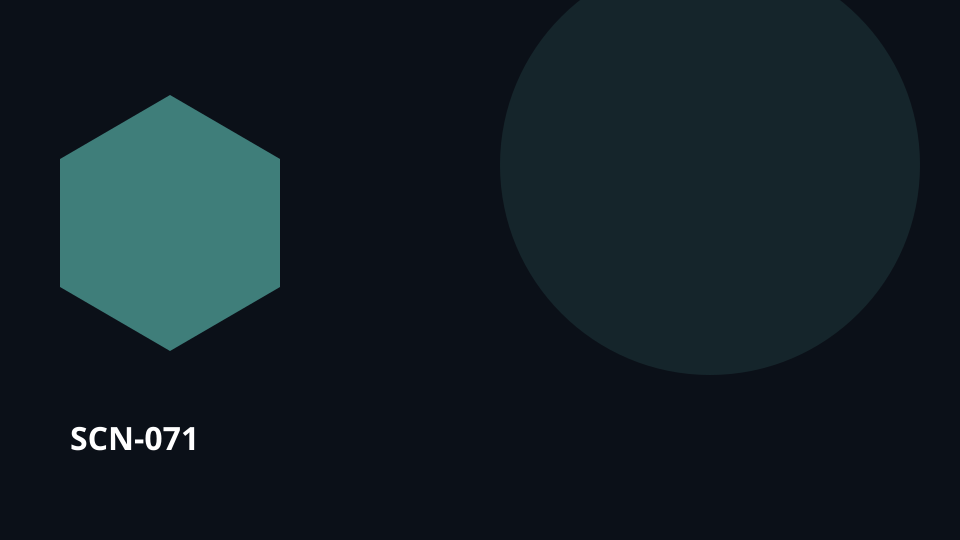

Point de départUn mandat ou un plan qui doit devenir action

SCN-071 · Organiser et agir
Un film perd son lieu principal et un acteur le matin même du tournage
Des centaines de décisions créatives et logistiques deviennent soudain invalides. L’équipe doit reformer le plan sans oublier ce qui peut être sauvé et pourquoi certaines scènes étaient conçues ainsi.
← Retour à la mosaïque complèteCe qui peut se perdre
Le travail arrive souvent sans le pourquoi, le bon contexte, ses dépendances ou la preuve attendue du résultat.
Koali maintient le lien
La valeur ne vient pas d’une fonctionnalité isolée. Elle vient du fait de préserver le même contexte tout au long de rupture → … → mémoire, afin que connaissances, personnes, choix, travail et mémoire restent reliés.
Déroulé
rupture → contraintes → options → replanification → rôles → tournage → mémoire
Transposable àcinéma · événements · production